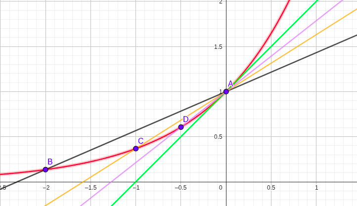
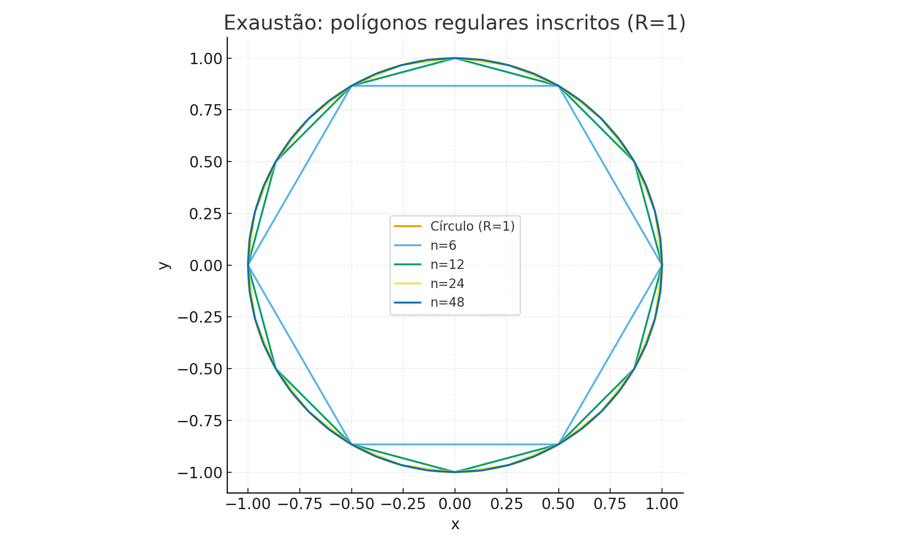

🧠 Módulo 1.1: O que é Cálculo? História e aplicações
← Sumário do Curso · ← Cursos de Matemática · ← Seção de Matemática
1 🧠 Módulo 1.1: O que é Cálculo? História e aplicações
- Noções básicas de álgebra (operações com expressões, equações simples).
- Familiaridade com funções elementares (reta, parábola, exponencial, logaritmo).
- Capacidade de interpretar gráficos cartesianos.
As fórmulas deste curso são preparadas em LaTeX, o padrão acadêmico para escrita matemática,
o que garante clareza e qualidade tipográfica na apresentação.
👉 Você verá apenas o resultado final, sem precisar conhecer LaTeX.
1.1 ✨ O que é o Cálculo?
1.1.1 🌱 Intuição inicial
Imagine um carro na estrada: o velocímetro mostra como a velocidade muda agora; já a distância total depende de somar pequenos trechos.
Esse é o espírito do cálculo: estudar a mudança e o acúmulo no mundo real.
1.1.2 📐 Formulação matemática (enxuta)
- Mudança → taxas de variação (derivadas).
- Acúmulo → totais e áreas (integrais).
- Limite → base formal que dá precisão ao “instantâneo” e ao “contínuo”.
1.2 Os dois problemas fundamentais do cálculo
1.2.1 🌱 Intuição: tangentes e áreas
- Problema da tangente: qual é a inclinação de uma curva em um ponto?
- Problema da área: qual é a área de uma região limitada por curvas?
1.2.2 📐 Formulação matemática
- Tangente em \(A=(a,f(a))\): a inclinação da tangente é o valor para o qual as secantes convergem quando o segundo ponto se aproxima de \(A\).
- Área em \([a,b]\): a área sob \(y=f(x)\) é o valor para o qual as somas de pequenos retângulos convergem quando refinamos a partição.
1.3 🔎 Motivação visual — o problema da tangente
Usaremos a função \(y=e^x\) no ponto \(A(0,1)\). Na figura, retas secantes \((A–B, A–C, A–D)\) vão “girando” até a reta verde, que representa a tangente em \(A\).
Figura — Aproximação da tangente por secantes para \(y=e^x\)

1.3.1 🧮 Mini exemplo numérico (sem notação de limite)
Para \(y=e^x\) em \(x=0\), considere a secante entre \(x=0\) e \(x=h\).
A inclinação dessa secante é \[
m(h)=\frac{e^{h}-e^{0}}{h}=\frac{e^{h}-1}{h}.
\]
Tabela (valores ilustrativos):
| \(h\) | Expressão de \(m(h)\) | Valor aproximado |
|---|---|---|
| 1 | \(\dfrac{e-1}{1}\) | 1.7183 |
| 0.5 | \(\dfrac{e^{0.5}-1}{0.5}\) | 1.2974 |
| 0.1 | \(\dfrac{e^{0.1}-1}{0.1}\) | 1.0517 |
| 0.01 | \(\dfrac{e^{0.01}-1}{0.01}\) | 1.0050 |
📌 Observação: os valores numéricos mostram que, à medida que \(h \to 0\), \(m(h)\) se aproxima de 1.
Logo, a inclinação da reta tangente ao gráfico de \(y=e^x\) em \(x=0\) é 1.
Esse é o problema da tangente, um dos dois problemas fundamentais do cálculo.
1.4 🔎 Motivação visual — o problema da área (método de exaustão)
Considere um círculo de raio 1. Inscrevemos polígonos regulares de \(n\) lados.
Quando \(n\) cresce, a área do polígono se aproxima da área do círculo — este é o método de exaustão de Arquimedes.
Figura — Polígonos inscritos aproximando a área do círculo (R=1)

1.4.1 🧮 Exemplo numérico (área de polígono inscrito)
Para um polígono de \(n\) lados inscrito no círculo unitário, a área é \[ A_n=\frac{n}{2}\,\sin\!\left(\frac{2\pi}{n}\right). \]
| \(n\) | \(A_n\) | \(\pi - A_n\) |
|---|---|---|
| 4 | 2.0000 | 1.1416 |
| 6 | 2.5981 | 0.5435 |
| 12 | 3.0000 | 0.1416 |
| 24 | 3.1058 | 0.0358 |
| 48 | 3.1326 | 0.0090 |
| 96 | 3.1394 | 0.0022 |
📌 Lembrete: a área do círculo é dada por \(\pi r^2\).
No caso \(r=1\), a área é \(\pi \approx 3.1416\).
Portanto, a última coluna da tabela mostra como a diferença \(\pi - A_n\) tende a zero à medida que \(n\) cresce.
Esse raciocínio antecipa a integral como ferramenta para medir áreas e acúmulos — o problema da área, o outro problema fundamental do cálculo.
1.5 📜 Breve história do Cálculo
- Arquimedes (séc. III a.C.): método da exaustão (áreas e volumes) — semente do cálculo integral.
- Fermat (séc. XVII): técnicas para tangentes — semente do cálculo diferencial.
- Newton (1643–1727): focado em movimento e Física; chamou derivadas de fluxões.
- Leibniz (1646–1716): notação clara e geral (símbolos que usamos até hoje).
Mais adiante veremos que mudança (derivadas) e acúmulo (integrais) estão conectados por um resultado central — o Teorema Fundamental do Cálculo — que dá unidade à disciplina.
1.6 ✅ Encerrando a introdução
- O cálculo responde a duas perguntas universais:
- Quão rápido algo muda agora? (tangentes/derivadas)
- Quanto se acumulou no intervalo? (áreas/integral)
- Quão rápido algo muda agora? (tangentes/derivadas)
- Nesta abertura, evitamos símbolos formais de limite/derivada/integral — focamos na intuição visual e histórica.
- A formalização virá passo a passo, sempre conectada a figuras e exemplos numéricos.